Projekt - Thermostat
Projektarbeit von Philip Cander, Serkan Cengiz, Roman Maznov
Projektbeschreibung:
Die Aufgabe besteht darin eine Klimabox mithilfe von Microcontroller Arduino zu programmieren. Dabei sollen die Parameter “Temperatur” und “Luftfeuchtigkeit” als Prototyp für ein Kundengespräch simuliert werden.
Diese elektronischen Komponenten stehen zur Verfügung:
- 1 x Arduino Uno
- 1 x Sensor DHT 11/22
- 4 x LED (gelb, blau, grün, rot)
- 2 x Taster
- 1 x Drehpegler (Potentiometer 10KOhm, KEIN Inkrementalgeber)
- 1 x LCD1602 (zweizeiliges Display, an I2C-Bus angeschlossen)
Der Sensor DHT11/22 kann die Messwerte (Temperatur, Luftfeuchtigkeit) erfassen, in Variablen speichern und auf einem zweiten Display (LCD1602) anzeigen.

Funktionsbeschreibung:
Mit drei LED's soll ein bestimmter Messbereich visualisiert werden. Als Messwert wird hier die Temperatur gewählt.
- Die blaue LED signalisiert, wenn der Messbereich unterschritten wird. Die rote LED signalisiert, wenn ein Messbereich überschritten wird. Die grüne LED zeigt an, wenn sich der Messwert im vorgegebenen Messbereich befindet.
- Der min-Wert vom Messbereich ist im Quellcode fest vorzugeben. Der max-Wert vom Messbereich wird mit dem Drehpotentiometer zur Laufzeit des Programms eingestellt. Wird der min-Wert von 20°C unterschritten, wird dies mit der blauen LED signalisiert. Wird der max-Wert von 24°C überschritten, wird dies mit der roten LED signalisiert. Der max-Wert kann in Schritten mit dem Drehpotentiometer nach unten bzw. oben verändern werden, er darf den min-Wert nicht unterschreiten.
- Da es zu Testzwecken die Umgebungstemperatur der Hardware nicht beliebig verändert werden kann, erfolgt ein Unit-Test auf der Simulationsplattform Wokwi.
- Wir müssen darauf achten, dass der Quellcode der Simulation auch auf dem Arduino Uno R1 laufen muss. Lediglich Der Temperatursensor DHT muss angepasst werden. Simulation = DHT22 Arduino Shield = DHT11
- LCD1602-Modul soll die aktuelle Temperatur und Luftfeuchtigkeit anzeigen lassen
- Optional: Es sollte überprüft werden, ob die aktuellen Werte entweder im seriellen Monitor der IDE oder in einer Excel- oder CSV-Datei übertragen werden können.
Modell (Schaltplan):

Auf dem Schaltplan ist die Verkabelung der elektronischen Komponenten zu sehen. Außerdem sind dort noch andere Komponenten zu sehen, welche in dem
Quellcode:
#define POTI A0//Potentiometer an Pin A0
#define LED1 4 //LED1 rot
#define LED2 5 //LED2 grün
#define LED3 6 //LED3 blau
#define LED4 7 //LED4 gelb
//alle vier LEDs zu einem Array zusammenfassen
//dieses ist für das Mapping später von Vorteil.
int leds[] = {LED1, LED2, LED3, LED4};
void setup() {
//setzen der LEDs als Ausgang
pinMode(LED1, OUTPUT);
pinMode(LED2, OUTPUT);
pinMode(LED3, OUTPUT);
pinMode(LED4, OUTPUT);
}
void loop() {
// Liest die Volt anzahl vom Pin A0 aus. (Die Volt anzahl wird durch ein Potentiometer eingestellt)
int value = analogRead(POTI);
// Mappt den Wert von 0-1024 auf 0-4 übersetzt vom Potentiometer auf die 4 LEDs
int led = map(value,0,1024,0,4);
// setzt die LEDs zurück bevor eine neue LED aktiviert wird.
resetLEDs();
// Aktiviert die LED die wir vorher gemappt haben.
digitalWrite(leds[led], HIGH);
}
// Hier ist die Funktion zu reseten (aus machen) der LEDs.
void resetLEDs(){
digitalWrite(LED1, LOW);
digitalWrite(LED2, LOW);
digitalWrite(LED3, LOW);
digitalWrite(LED4, LOW);
}
Struktogramm:
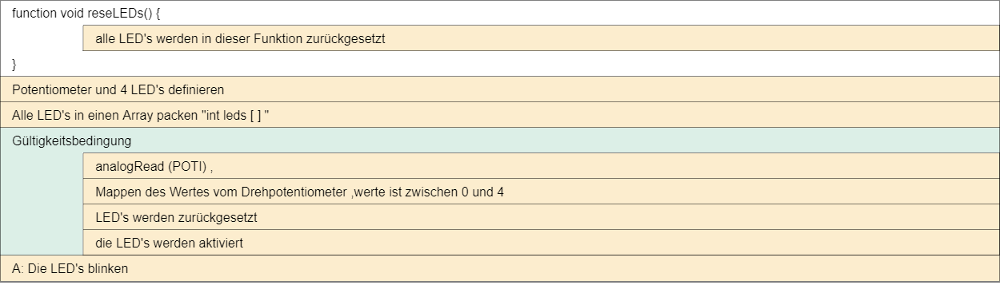kommt nocht ...
Thementag 6 - Objektorientiertes modellieren - UML
Vorab eine Übersicht von Elementen, die in einem UML-Diagramm vorkommen können:
Use-case Diagramme
| Name | Syntax | Beschreibung |
|---|---|---|
| Systemgrenze | Grenze zwischen System und den Benutzern des Systems | |
| Anwendungsfall | Vom System erwartetes Verhalten | |
| Akteur | Rolle der Systembenutzer | |
| Assoziaion | Beziehung zwischen Anwendungsfall und Akteur | |
| Generalisierung | Vererbungsbeziehung zwischen Akteuren und Anwendungsfällen | |
| extend | A extends B, optionales Verwenden von Anwendungsfall A durch B | |
| include | A includes B, zwingendes Verwenden von Anwendungsfall A durch B |
Aktivitätsdiagramme
| Name | Syntax | Beschreibung |
|---|---|---|
| Aktivitätsknoten | 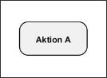 | Repräsentiert eine Aktion |
| Initalknoten | 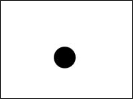 | Kennzeichnet den Start einer Aktivität |
| Aktivitätsendknoten | 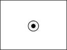 | Kennzeichnet das Ende einer Aktivität |
| Entscheidungs- und Vereiniungsknoten | 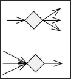 | Aufspaltung und Zusammenführung von alternativen Abläufen |
| Parallelisierungs- und Synchronisationsknoten | 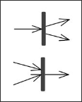 | Aufspaltung und Zusammenführung von parallelen Abläufen |
| Ablaufend Knoten | 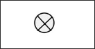 | Ende von EINEM Ablauf |
| Transition | 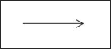 | Verbindung der Knoten einer Aktivität |
| Aktivitätsaufruf | 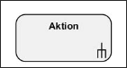 | Schachtelung von Aktivitäten |
| Objektknoten, Pins | 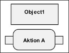 | Beinhalten Daten und Objekte |
| Partition |

|
Asynchrones Ergebnis / Zeitergebnis |
| Signal | 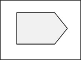 | Übermittlung eines Signals an einen anderen Empfänger |
| Asynchrones Ereignis / Zeitergebnis | 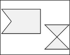 | Warten auf ein Ergebnis bzw. einen Zeitpunkt |
| Exception Handler | 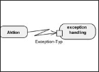 | Aktivität wird bei Ausnahme ausgeführt |
| Unterbrechungsbereich | 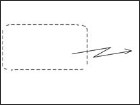 | Wird der Unterbrechungsbereich über die Unterbrechungskante verlassen, so werden alle in der Region vorhandenen Token gelöscht |